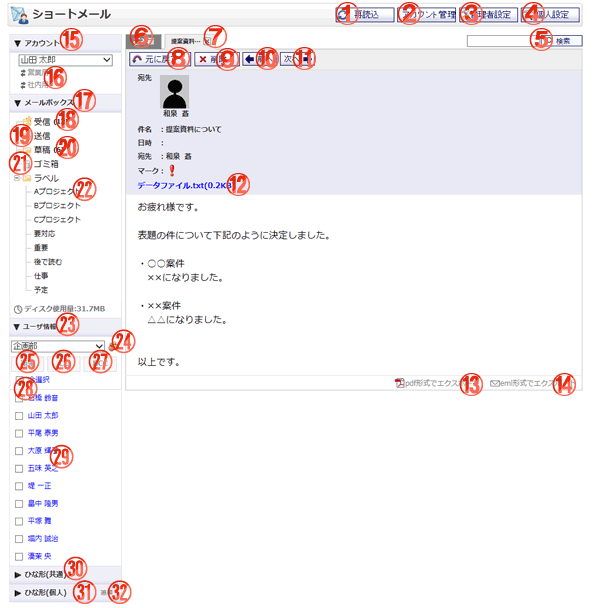

作成した草稿（ゴミ箱）の内容を確認する画面です。

機能説明
再読込ボタンショートメール一覧を再読込します。再読込が終了するとゴミ箱のショートメールの一覧を表示します。 |
アカウント管理ボタン個人設定のアカウントの管理画面へ遷移します。 |
|---|---|
管理者設定ボタン管理者設定画面へ遷移します。 |
個人設定ボタン個人設定画面へ遷移します。 |
検索ボタン入力されたキーワードを元に詳細検索画面へ遷移します。 |
ゴミ箱切り替えゴミ箱のショートメール一覧が表示されます。 |
内容確認非表示ボタン表示されている内容確認の表示を消します。 |
元に戻すボタン元に戻す確認画面へ遷移します。元に戻す確認画面でOKボタンをクリックすると、草稿（ごみ箱）をゴミ箱から元へ戻します。 |
削除ボタン削除確認画面へ遷移します。削除確認画面でOKボタンをクリックすると、草稿（ごみ箱）をゴミ箱から削除します。 |
前へボタン前のショートメールの内容確認画面へ遷移します。 |
次へボタン次のショートメールの内容確認画面へ遷移します。 |
添付ファイル名クリックすると添付ファイルのダウンロードができます。 |
PDF形式でエクスポートPFD形式でメールをダウンロードします。
|
eml形式でエクスポートeml形式でメールをダウンロードします。 |
アカウント詳細切り替えクリックするとアカウント詳細が表示されます。 |
アカウント一覧表示されているアカウントを選択することが出来ます。
|
メールボックス詳細切り替えクリックするとメールボックス詳細が表示されます。 |
受信ボックス受信したショートメールの一覧を表示します。括弧内の数字は、未読のショートメールの数です。 |
送信ボックス送信したショートメールの一覧を表示します。 |
草稿ボックス作成した草稿の一覧を表示します。括弧内の数字は、草稿保存されている数です。 |
ゴミ箱ボックスゴミ箱へ移動したショートメールの一覧を表示します。 |
ラベルボックス選択されたラベルのショートメール一覧を表示します。括弧内の数字は、未読のショートメールの数です。 |
ユーザ情報詳細切り替えクリックするとユーザ情報詳細が表示されます。 |
グループボタンポップアップでグループ選択画面が開きます。 |
宛先ボタンチェックボックスで選択したユーザを宛先に設定し、作成画面に反映します。 |
CCボタンチェックボックスで選択したユーザをCCに設定し、作成画面に反映します。 |
BCCボタンチェックボックスで選択したユーザをBCCに設定し、作成画面に反映します。 |
全選択チェックボックスチェックをつけると、全てのユーザのチェックボックスにチェックが付きます。チェックを外すと、全てのユーザのチェックボックスのチェックが外れます。 |
ユーザリンク選択したユーザを宛先に設定し、新規作成画面を開きます。 |
ひな形（共通）一覧切り替えクリックするとひな形（共通）一覧が表示されます。 |
ひな形(個人)一覧切り替えクリックするとひな形(個人)一覧が表示されます。 |
ひな形追加リンクひな形一覧画面へ遷移します。 |
表示・入力項目説明
件名
件名が表示されます。
送信者
送信者が表示されます。
日時
送信日時が表示されます。
宛先
宛先が表示されます。
マーク
マークが表示されます。
添付
添付ファイル名が表示されます。